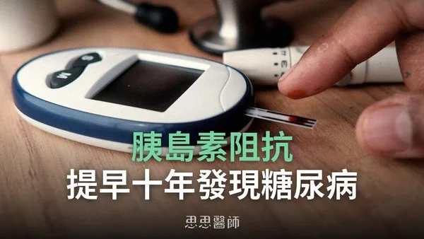
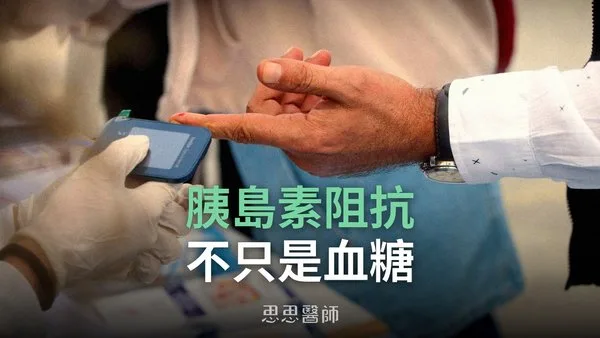
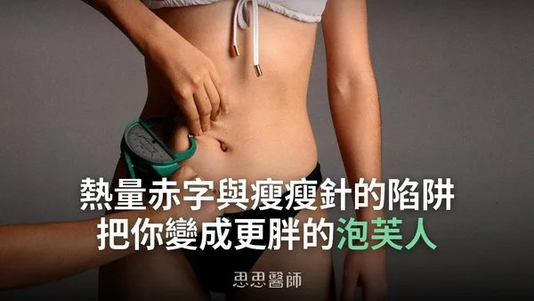
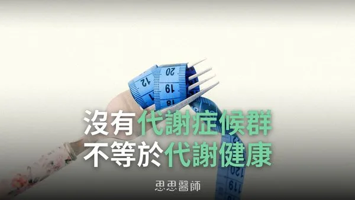
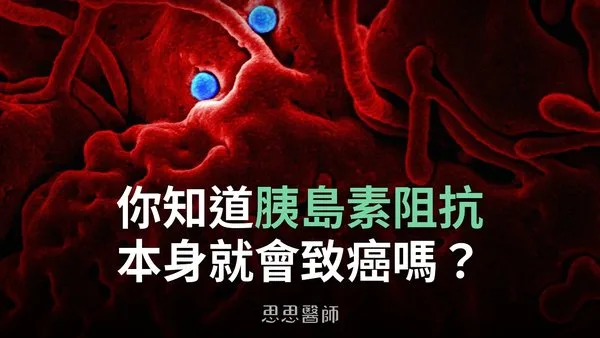

2025-06-30
空腹血糖與 HbA1c 正常仍可能有胰島素阻抗，Kraft test 以 100 克葡萄糖測血糖與胰島素曲線，可在糖尿病前十年甚至二十年發現。

2024-10-30
胰島素阻抗不限於血糖失控，在肝臟、肌肉、腦部等器官表現各異，單靠血糖監測無法準確診斷問題。

2025-12-14
只靠熱量限制或瘦瘦針而缺乏阻力訓練，會流失肌肉並容易復胖成肌少性肥胖，作者建議搭配阻力訓練並把蛋白質拉到每公斤體重 1.5 公克以上。

2026-03-09
健檢數字正常、沒有代謝症候群不等於代謝健康，亞洲人在較低 BMI 就可能有風險，文中強調飲食、睡眠、運動與壓力管理的日常維護。

2025-07-13
高胰島素環境下 mTOR 與 PI3K 路徑過度活化促進細胞異常生長，胰島素阻抗本身具有致癌機轉。
2026-10-14
提升胰島素敏感度可透過改善睡眠、管理壓力、增加肌肉、飯後運動和間歇性斷食，並補充維生素D、鎂、鉻等保健品。